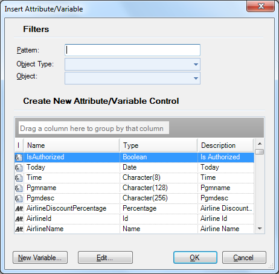
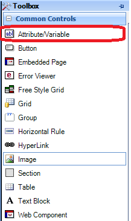
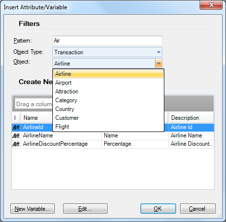

This dialog allows selecting attributes and/or variables to include them in some section of an object (form, rules, events, etc.).  The dialog will be opened if you drag the Attribute/Variable icon to anywhere in a form: 
...and also if you select: Insert/Attribute in the GeneXus menu bar to insert attributes or Insert/Variable to insert variables, when you are positioned on an object section. You can filter to limit the search, as shown in the following image:  Other ways to insert Attributes or Variables:
See also
|
| Backlinks | ||
| Attribute definition | Category:Common Controls | |
| Category:Free Style Grid control | Insert Free Style Grid | Insert Grid option |
| Insert Variable | Visible property (in run-time for Smart Devices) |